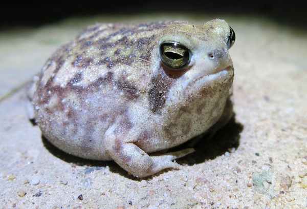

Images
Questions
1. What kind of photos are good to encode using JPEG?
Complex images with gradients and lots of colors.
2. What kind of photos are good to encode using GIF?
Simple animations and graphical images.
3. What is unique about the PNG format?
Image data is not lost after saving a png. This ensures that the image quality remains identical even after lots of saves and edits.
4. How do you resize your photo to the size it should be displayed?
Using editing software.
5. Why should you resize photos using photo editing software instead of resizing it using CSS?
If resizing an image in css, the browser still downloads the original, full-resolution image file. This causes the download of larger files than necessary